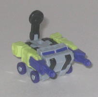
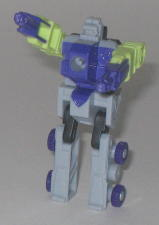
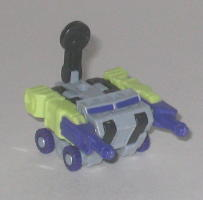
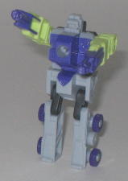
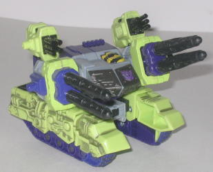
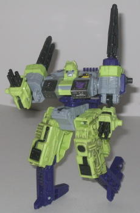

Blackout
(Energon)
Blackout
(Energon)
 
Allegiance : Minicon
Size : Mini-Con
Difficulty of Transformation : Very Easy
Color Scheme : Light purplish gray, royal purple, and some light chalky green, silver, and black
Rating : 6.2
(NOTE: Because this set is a repaint, this is not a full-blown review. This mainly covers any changes made to the set and the color scheme, and merely compares it to Armada Demolishor w/ Blackout. For a review on the mold itself, read the review of Armada Demolishor w/ Blackout here .)
Blackout
(Energon)


Allegiance
: Minicon
Size
: Mini-Con
Difficulty of Transformation
: Very
Easy
Color Scheme
: Light purplish gray,
royal purple, and some light chalky green, silver, and black
Rating
: 6.2
This time around, Blackout
sports a green, purple, and gray color scheme, much like his larger partner.
And overall, it works fairly well; the purple and gray go together very
nicely, especially since the gray already has a purplish tint to it. The
green, taken as a whole, doesn't go together quite as well as the other
colors, however. If it was used on another main part of Blackout, like
the legs, it might have worked. But since it's just used on the arms, it
makes Blackout look a little unbalanced in terms of colors, since all of
his other colors are dark or dull. Blackout still looks alright overall,
but I think the
Powerlinx Armada version
is still the best paint job this toy has gotten so far.
No mold changes have
been made to Energon Blackout.
 Demolishor
(Energon; Armada Redeco)
Demolishor
(Energon; Armada Redeco)


Allegiance
: Decepticon
Size
: Deluxe
Difficulty of Transformation:
Medium
Color Scheme
: Light chalky green,
royal purple, light purplish gray, black, and some dull silver, chalky
gray, white, and yellow
Powerlinx ports
: 4 (1 gimmicked)
Rating
: 9.2
This version of Demolishor
is indeed his Energon version, but it's before his upgrade into his
dump
truck form
. So he's got the colors of his later form, but the actual
mold of his Armada version. The color scheme is very G1 Constructicon-ish,
and is a definite homage to those toys. The purple and green go pretty
darn well together, and I love the shade of purple used especially. The
green, not so much; I think it's a bit too light and bright. Not drastically
so, mind you, but it could stand to be a shade or two darker. The light
gray, as mentioned in Blackout's review, also melds well with the rest
of the toy, especially since it's of a purplish tone. The black is a good
accent color as well-- in fact, no other color I can think of would have
worked better in those areas. The paint apps are generally nice and fit
in well, but one thing I'm not fond of is the "dirty" paint dusting used
on the upper treads. Sure, it brings out detailing, but that dusty gray
looks pretty ugly on that bright green. It worked on the original Demolishor,
but it sure doesn't work with this paint job.
No mold changes have
been made to Energon pre-upgrade Demolishor.
I think this version of the Armada Demolishor w/ Blackout mold looks pretty good, and is a nice homage to the G1 Constructicons. However, the green really could stand to be a few shades darker, and the gray paint mask used on Demolishor's treads looks rather ugly. Gotta love that purple, though. Recommended over the original Armada Demolishor, but not the Armada Powerlinx version.
Review by Beastbot